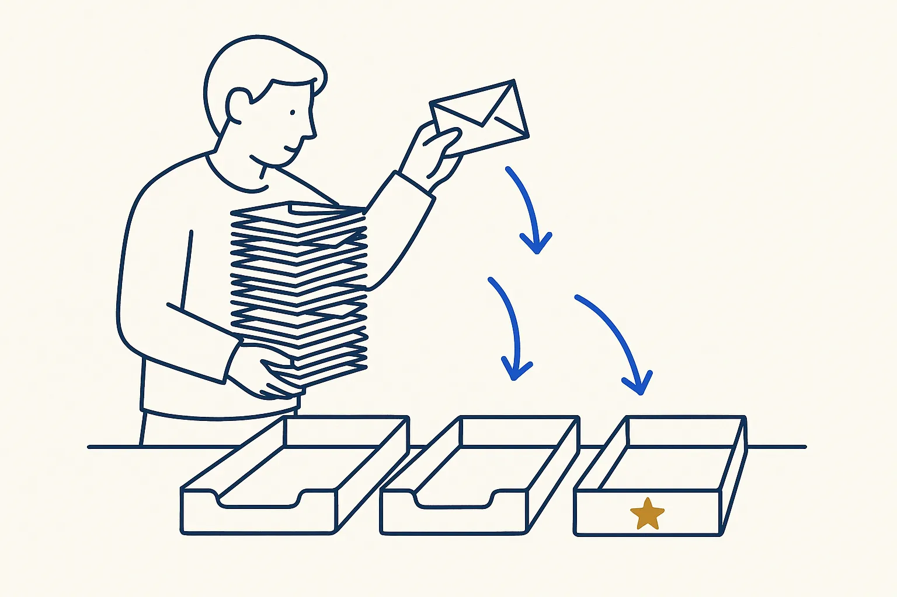

Sample · beginner
Decide once about your top fifty senders
One month of sender names in, a decision per sender and a daily summary out.

Based on: From 95 mails to the one that needs you · Level: beginner · Time: 45 minutes live, or one Build Day afternoon
Steps
- Export the sender list of one month of mail (no content needed).
- Sort by volume; take the top fifty.
- Decide per sender: read, skim later, archive, unsubscribe.
- Let the AI apply the decisions to one day of mail and show what is left.
- Count: how much of your inbox did fifty decisions cover?
What you take home
A working result on example data, the rules written down, and the list of cases the rules did not cover — the honest next step.